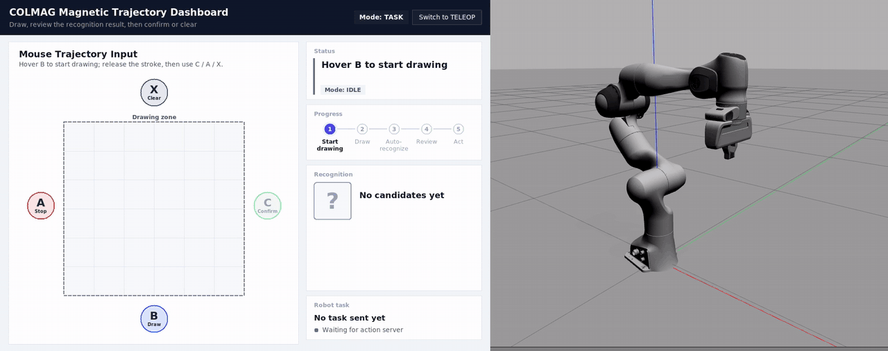

Robot software · control · full-stack tools
Xiaowei Rong
I build robot software end to end: recognition and supervision logic, Cartesian and torque controllers on Franka arms, and the experiments and tests that show whether they work. When a spreadsheet stops being enough, I build the tool myself.
Case studies
One project is open source. The other three are private because they are team work, coursework or hold personal data, so each case study explains the problem, the design and the trade-offs without the code.

Open sourcelive demo · ROS1 Noetic
Magnetic Trajectory Robot Interface
Gesture-to-task robot interface with a confirmation gate and one C++ teleop core for Gazebo and FR3.
PrivateTeam research project · ROS 2 · Python
GP torque compensation
Frozen-GP torque residual compensation on a Franka Panda, tested in stages on the real robot; a historical residual database was chosen as the next source.
PrivatePersonal tool · TypeScript · Fastify · React · SQLite
Job-search workbench
Self-hosted tracker with an audited application timeline and a one-click, 3-permission job-capture extension.
PrivateGroup projects, team of 4 · ROS 2 · C++
Robot manipulation coursework
UR5e drawing, Franka teach-and-replay with a torque controller, vision-triggered button press, and task-priority IK under an RCM constraint.